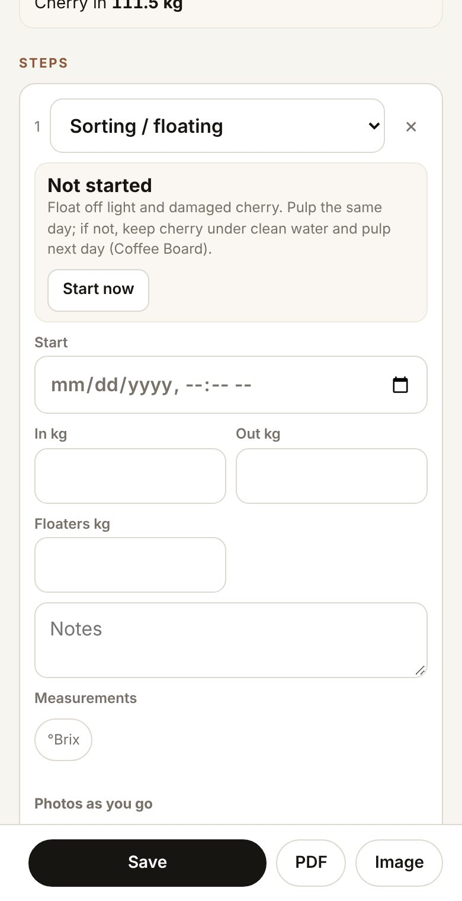
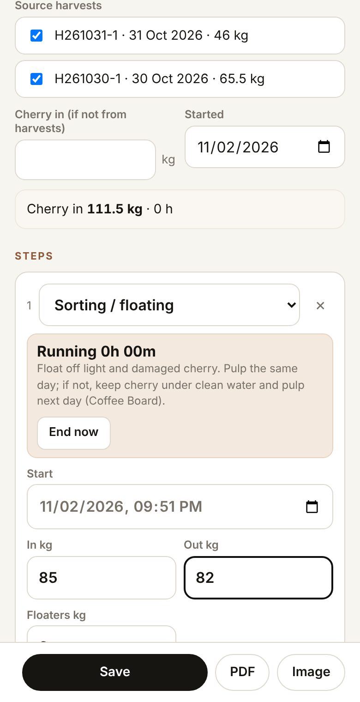
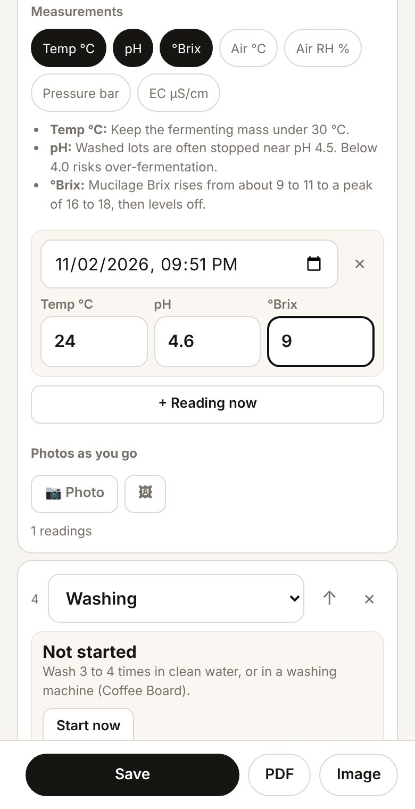
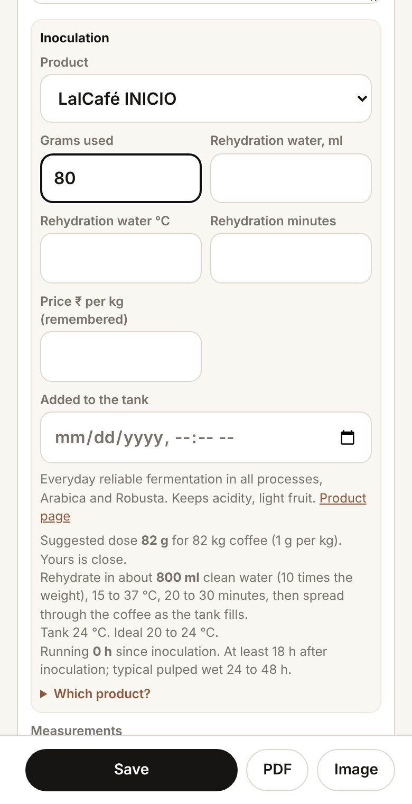

What it is
A run follows one batch through floating, pulping, fermentation, washing, drying, resting and hulling. It takes its cherry from your harvests, so it already knows the plots, and the green lot made at the end takes its weight from the run.
Process run · Cherry to green
From cherry to green coffee, one batch at a time: each step with its times, kilos and readings.
What it is
A run follows one batch through floating, pulping, fermentation, washing, drying, resting and hulling. It takes its cherry from your harvests, so it already knows the plots, and the green lot made at the end takes its weight from the run.
Step 1 · Start a processing run
Open Origin, the Process tab, and tap + Process. The Process code is made from the date (P, then year, month and day).

Also inOne coffee, one chain
Step 2
Choose the Pathway: Washed, Natural, a honey, anaerobic, or one of the fermentation-led processes further down. It is required.
Also inQuality as you go
Step 3 · Take the cherry from my harvests
Under Source harvests, tick the harvests in this batch; each shows its code, date and kilos. Cherry in adds up. For cherry not logged as a harvest, leave them unticked and type the kilos in Cherry in (if not from harvests). Check Started.

Step 4 · Use a ready-made list of steps
Open Start from a ready-made protocol (optional) and pick one, such as Washed arabica, Indian estate (Coffee Board of India). You will see 7 steps added. Fill in times and weights as you go. Each step carries a short guide from that source.

Step 5
To build your own list, choose a step type in the box under the steps and tap + Add step. The new step starts its clock straight away, with In kg taken from the last step's Out kg. ↑ moves a step up; × removes it.
Also inKilos carry forward
Step 6 · Time a step
When a step begins, tap Start now: it shows Running with a clock. When it is over, tap End now. Still running opens it again if you ended it by mistake.
Also inNothing gets lost
Step 7 · Weigh what goes in and out
Type In kg and Out kg, and the step's other boxes: floaters, water, the vessel or bed, notes.

Also inKilos carry forward
Tip
Runs keep themselves as you go. A moment after you start a step, type a weight or add a reading, it is kept on this phone; Kept on this phone and the time show under the steps. Leaving the page loses nothing. Save still works whenever you want it.

Also inNothing gets lost
Step 8 · Take pH, Brix and temperature readings
Under Measurements, tap the measures you want for this step: Temp °C, pH, °Brix, Air °C, Air RH % and others, depending on the step. Each one shows a guide range. Tap + Reading now each time you measure; the time fills in, you type the numbers. With two readings or more, a small chart appears with the guide range shaded.

Tip
Guide values and sources, after the last step, lists where each range comes from. They are starting points; sources differ, so adjust to your own lots.
Also inGuidance, not guarantee
Tip
On Now, New then Reading (pH, Brix, temp, photo) picks a live run and takes you to it. Each step also has its own Photo button.
Step 9 · Ferment with a yeast or starter
In a Fermentation step, choose a method with a yeast or starter, such as With yeast / starter. An Inoculation box opens: pick the Product, type the Grams used, and if you like the rehydration water, its temperature and minutes, the price per kg and when it went into the tank. The product's notes, a suggested dose for the kilos in the step and how to rehydrate it come from the maker's published sheets.

Step 10
The run's page shows the chain from plot to harvest to this run, and Share to a space, Image or PDF and Passport and QR.

Also inOne coffee, one chain
Watch out
Out more than in. If a step's Out kg is bigger than its In kg, or the first step takes more than its harvests weighed, the app says what to check (for example Pulping: out 90 kg is more than in 85 kg). It never changes your numbers. Usually a number went into the wrong box.
Watch out
An end time earlier than the start shows in red on the step. Fix the end time, or tap Still running.
Also inRecords you can trust
Why it matters
Cup quality is often made or lost in processing. With each run's times, kilos and readings kept, this season's best lot can be set beside last season's. Outturn (green out as a share of cherry in) is worked out once the green weight is known.